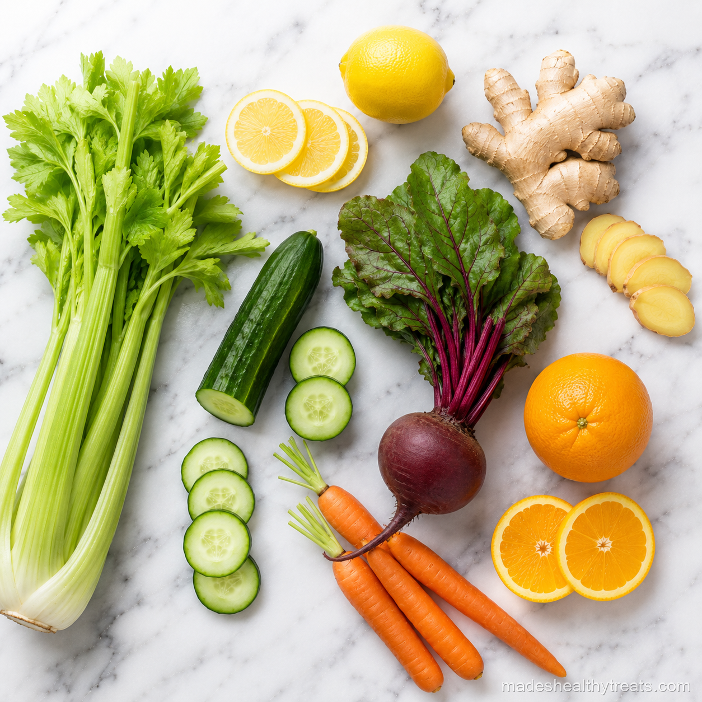
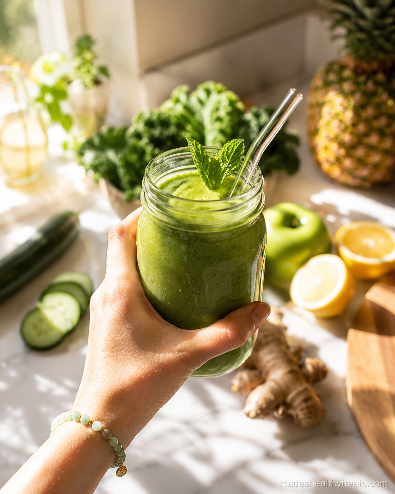
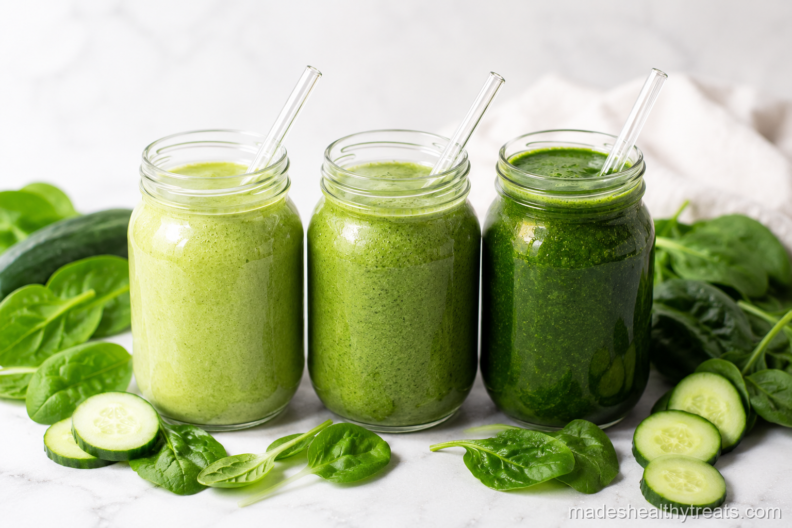
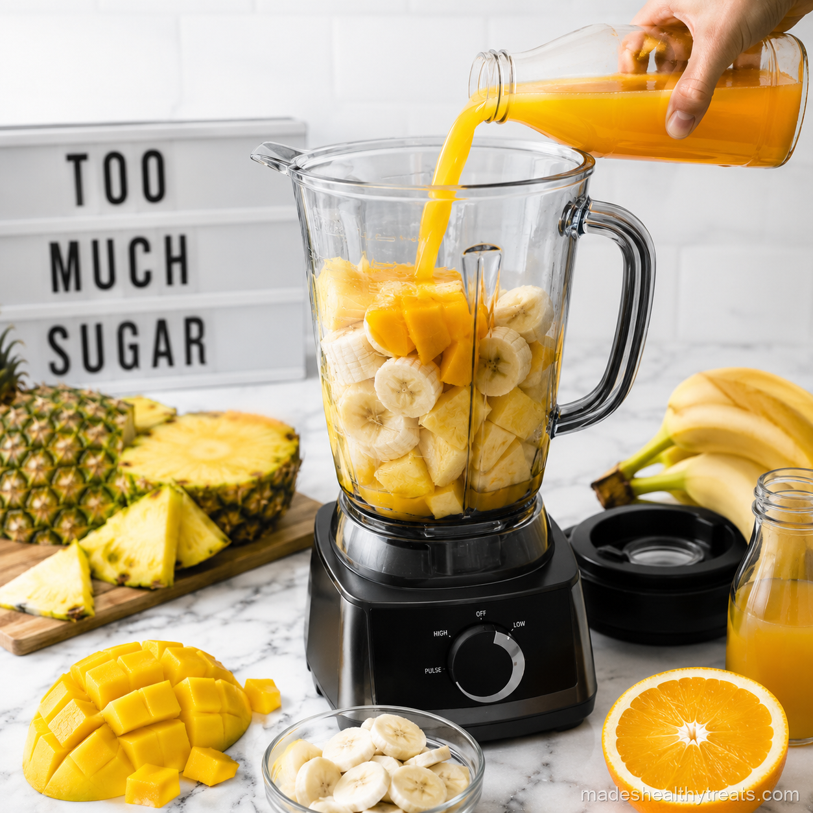

Do Juice Cleanses Work In Real Life
Do juice cleanses work? I wish the answer were simple, but bodies are not vending machines. I did a three day juice cleanse because I wanted to understand the experience instead of repeating opinions from the internet. Some parts felt wonderful, some parts felt annoying, and none of it turned me into a glowing forest fairy by day three.
What Felt Good During My Cleanse
The best part was how hydrated I felt. Drinking fresh juice all day meant I was getting water, minerals, and bright flavors constantly. My digestion felt lighter because I was not eating heavy meals, and I liked the reset of paying attention to what I was putting into my body.
What Did Not Feel So Magical
By the second day, I missed chewing. I also felt chilly and a little emotionally dramatic about toast, which taught me that juice alone is not always enough if you have a busy life. My energy came in waves, and I had to be gentle with movement.
What Juice Cleanses Actually Do
A juice cleanse can give your digestive system a short break and flood your day with vitamins from produce. It does not detox your body in the way marketing often claims, because your liver and kidneys are already doing that job every hour. Juice can support your body, but it does not replace your body.

I have learned that the best wellness habits are the ones that still feel kind on a normal Tuesday morning.
Who Should Be Careful
If you are pregnant, diabetic, recovering from disordered eating, managing blood sugar issues, or doing intense physical work, I would be careful and talk to a professional before cleansing. Juice cleanses can be too low in protein, fat, and calories for many people.
My Gentler One Day Reset
Now I prefer a gentle one day reset with three fresh juices, one big smoothie, soup for dinner, and plenty of water. That gives me the freshness I wanted without making me feel deprived. So do juice cleanses work? Sometimes, for a short reset, but they work best when they are realistic, kind, and not treated like a miracle.
What I Ate After The Cleanse Mattered Most
What I ate after the cleanse mattered more than the cleanse itself. The first time I finished, I wanted something warm and grounding, so I made soup with vegetables, lentils, and plenty of lemon. That meal taught me that a reset should lead you back to nourishment, not into a swing between restriction and overeating. If a cleanse makes you feel afraid of food afterward, it has missed the point. Food is not the enemy waiting at the end of the juice bottles.
How I Would Do It Differently Now
If I did another cleanse, I would make it gentler from the beginning. I would include smoothies for fiber, broth for warmth, and a simple dinner so my body had enough energy to function. I would skip intense workouts and choose walking, stretching, and early sleep. That version may not look as dramatic online, but it respects real life. The answer to do juice cleanses work depends so much on how you define work, and my definition now includes feeling steady, not just feeling empty.
The biggest lesson from my cleanse was that clarity does not have to come from extremes. I felt best when I treated the juices as support instead of a test. I liked the colors, the hydration, the ginger warmth, and the feeling of choosing produce on purpose. I did not like feeling cold, underfed, or distracted by hunger. That honesty is why I still make fresh juice, but I build it into a life with meals, protein, and rest.
You Might Also Like

Does a Smoothie a Day Actually Help You Lose Weight? I Tried It for 30 Days
I replaced my rushed breakfast with one green smoothie every morning for 30 days and tracked what really changed.
Read more →
What Happens to Your Body When You Drink Green Smoothies Every Day
I explain the simple body changes I noticed and the science that makes daily green smoothies make sense.
Read more →
The 7 Biggest Smoothie Mistakes That Are Ruining Your Results
I made these smoothie mistakes myself before I learned how to blend for energy, fullness, and real results.
Read more →Made's Note
If you want to reset, you do not have to disappear into a three day cleanse. One fresh juice, one real meal, and one honest glass of water can be a beautiful beginning. When I think about do juice cleanses work, I think about real mornings, real kitchens, and the small choices that help us feel at home in our bodies.